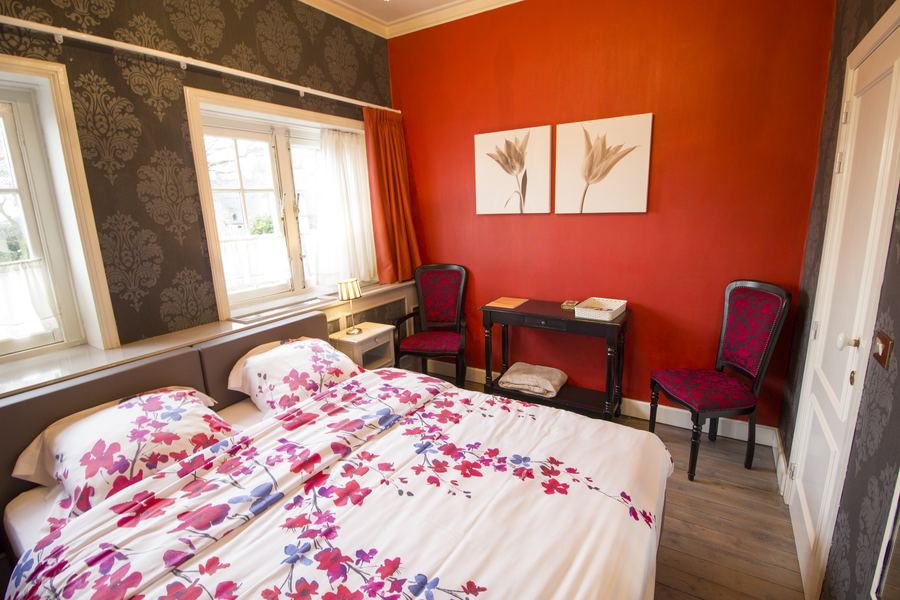
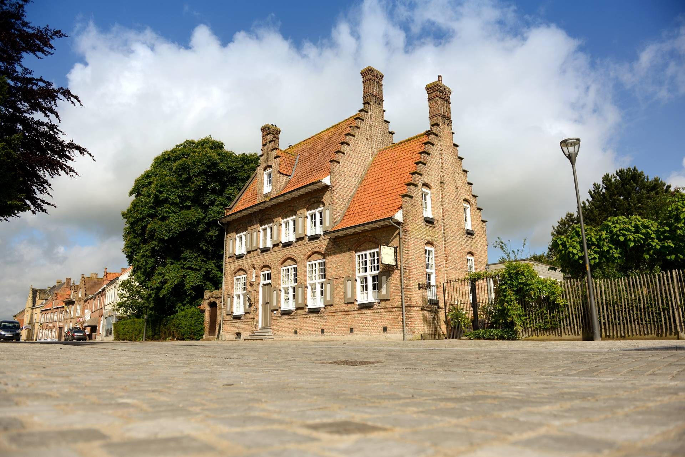
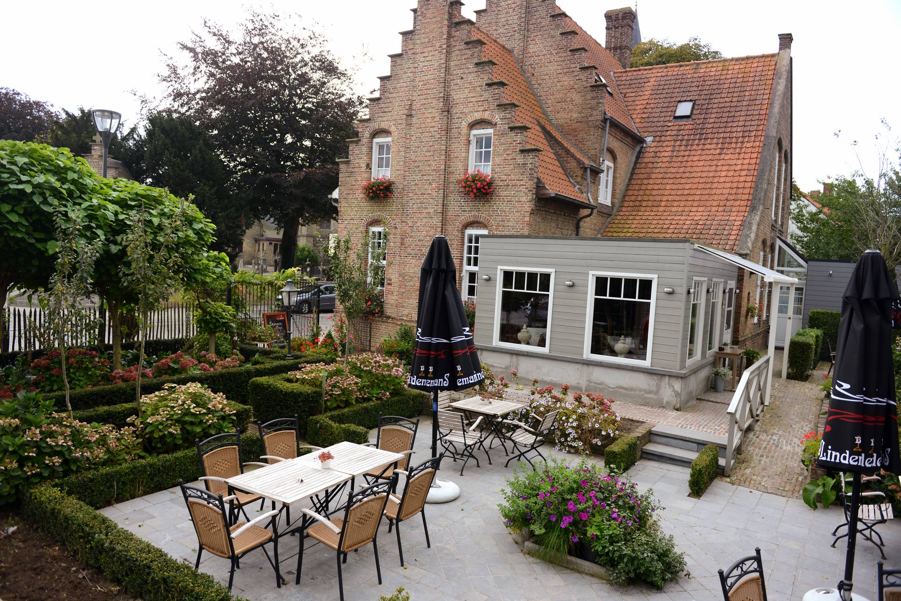
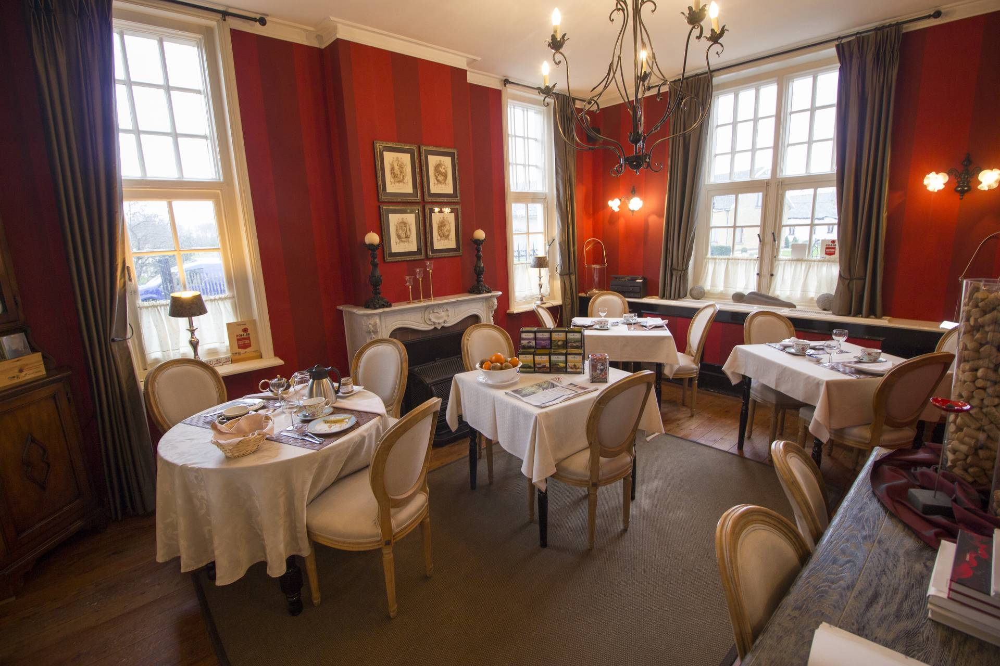
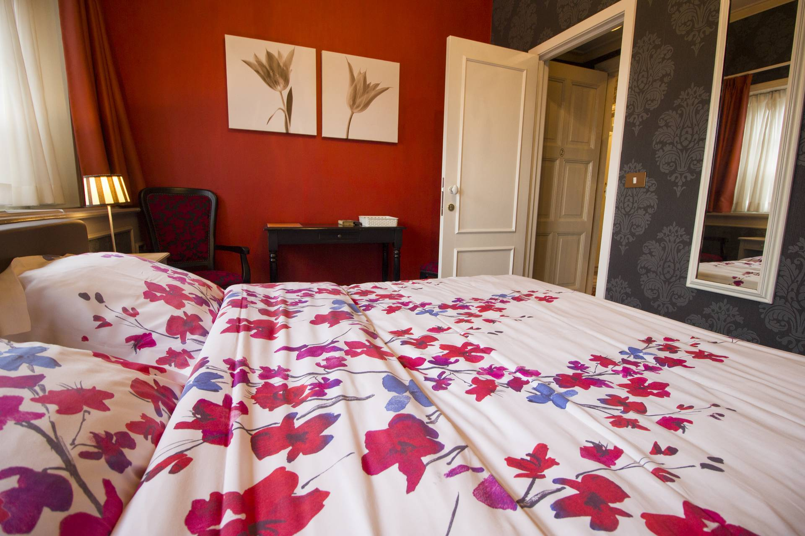
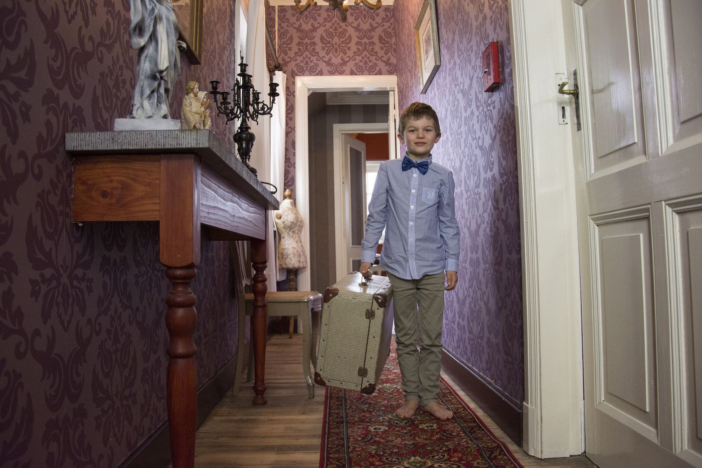
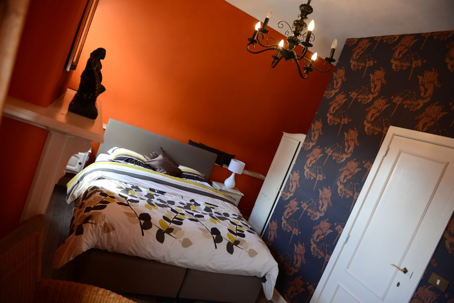
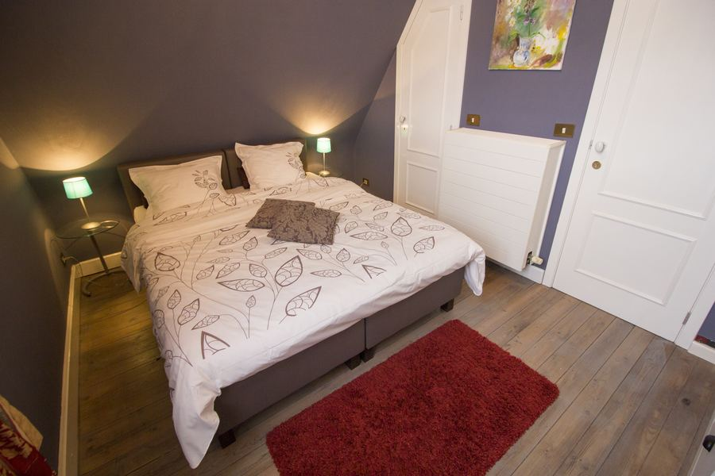
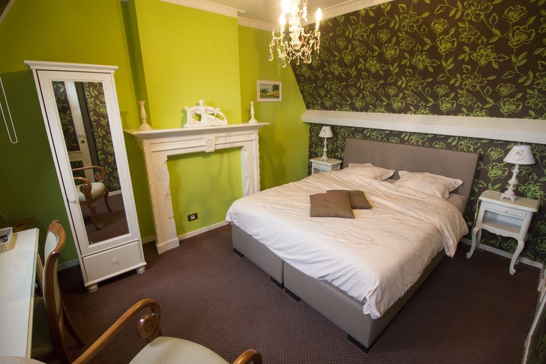

1st floorVermillion
View of the church tower, two single beds.






Five rooms, each with its own colour, a generous breakfast with local produce and the wide Yser meadows just beyond the village.
€80 a night for 1 person · €115 for 2 people · breakfast included

l'Heritage is a family home on the village square of Reninge, in the former chaplain's house next to the church. You stay in a small, personal house where evenings are as quiet as the polders and breakfast is waiting on a laid table in the morning.
From here you can walk or cycle straight into the Yser meadows, and Ypres, Poperinge and Diksmuide are each about fifteen minutes away.
Each room is named after its colour. Each has its own small bathroom with shower, toilet and washbasin. Breakfast is always included and the price depends only on the number of guests.
Inside you will find high ceilings, old doors, the odd chandelier and wallpaper with character. A house with a past, where you feel at home straight away.


1st floorView of the church tower, two single beds.

1st floorFacing east, with sunrise over the Yser plain.

1st floorAt the back of the house, the quietest spot.
 2nd floor
2nd floorCosy, with a dormer window overlooking the Yser meadows.

2nd floorA peaceful room under the roof.

You are welcome even if you are not staying the night. On the sunny terrace or by the fireplace we bake fresh pancakes from the family recipe and pour coffee for cyclists and walkers taking a break.
Any closure for holidays during the season is always announced in advance at the tearoom.
The Westhoek is flat, green and full of stories. A few tips from us, by bike or a short drive away.
Wet meadows along the Yser, with thousands of geese in winter. Perfect for walking and birdwatching.
The Cloth Hall, the In Flanders Fields Museum and, every evening at 8 pm, the Last Post at the Menin Gate.
The hop town, with its Hop Museum and Talbot House. Taste the region at Goeste.
The Yser Tower and the Trench of Death, one of the best-preserved trenches of the First World War.
Saint Sixtus Abbey and the In de Vrede visitor centre, known for its Trappist beer.
Nieuwpoort and De Panne for a day by the sea.
No need for the car. These routes start in or near Reninge, along the Yser and through the wet meadows of the Yser floodplain.
Starts in Reninge, with wide views over the De Blankaart nature reserve and the Yser meadows.
A loop along the Yser and the Blankaart lake. In winter thousands of geese gather here.
Along the old Yser dyke near Pollinkhove.
From Noordschote to the point where three waterways meet, a key spot in the First World War.
A flat loop along the Yser and through the historic little town of Lo. Easy for everyone.
The network runs through the village. Plan your own ride, short or long, to Diksmuide, Ypres or Poperinge.
An easy ride on the towpath to the Yser Tower.
Built in 1565–1566, a UNESCO World Heritage site.
A centuries-old yew behind the medieval town wall.
163 steps up to 31 metres, with views over the whole polder.
The village church, right next to l'Heritage.
Distances are approximate. Feel free to ask us for tips when you arrive.
See which dates are free and book online, directly with us. Questions first? Call or email us.